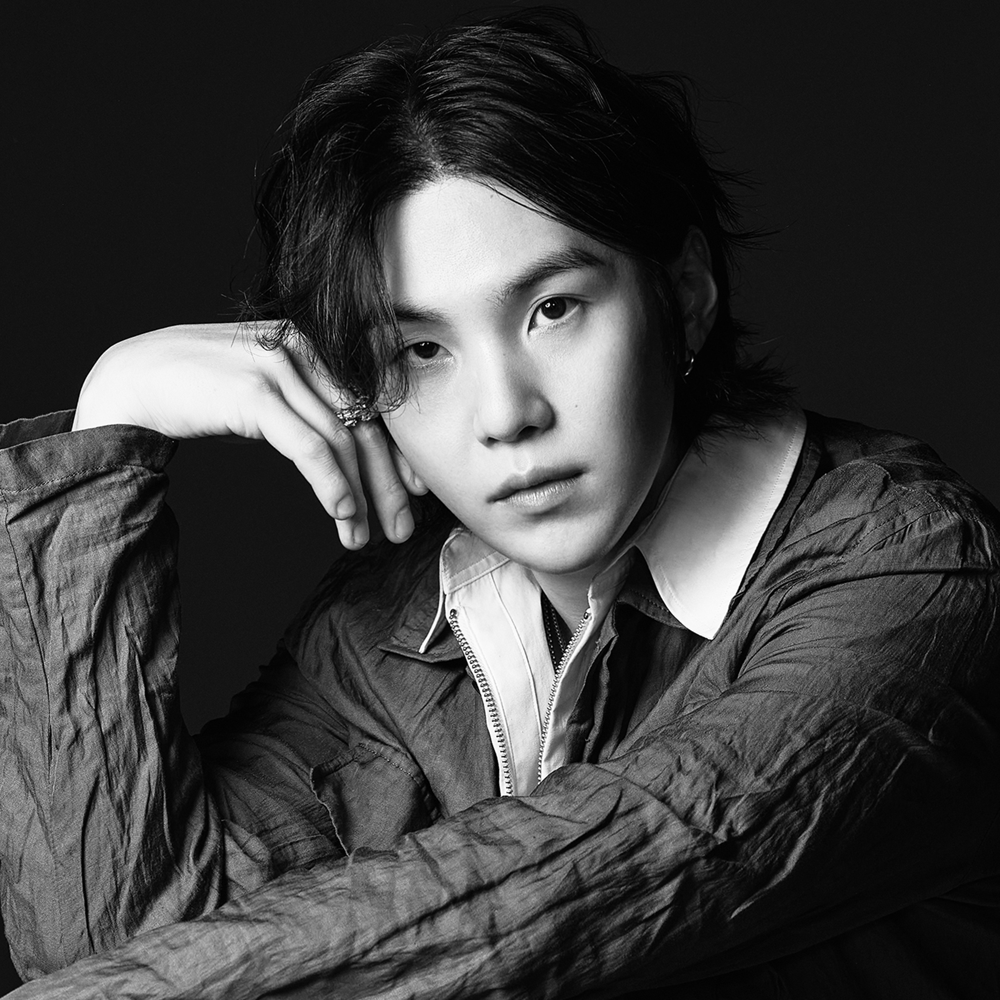
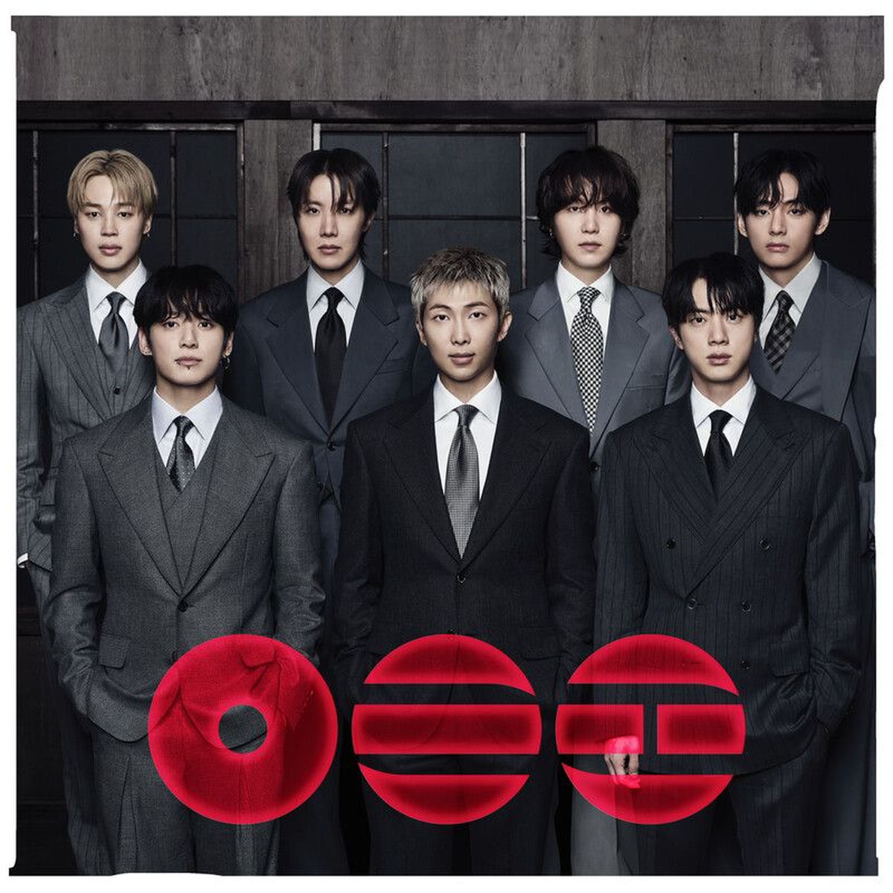

Líder • Rapper
RM
Kim NamjoonLíder do grupo, compositor e letrista principal de grande parte da discografia do BTS, reconhecido por suas letras reflexivas.
Fundada em 2005 por Bang Si-hyuk na Coreia do Sul e integrante da HYBE, a BIGHIT MUSIC é uma gravadora e empresa de entretenimento dedicada a produzir músicas autênticas e formar artistas que inspiram e confortam o público ao redor do mundo.
Casa de fenômenos globais como o BTS e o TOMORROW X TOGETHER (TXT), a gravadora se destaca pela liberdade criativa dada aos seus integrantes, unindo narrativas profundas, performances marcantes e uma conexão genuína com os fãs em todos os continentes.
📅 Fundada em 1º de fevereiro de 2005 como Big Hit Entertainment, passou a se chamar BIGHIT MUSIC em 2021.
Toque ou passe o cursor nos cards para interagir com os sete integrantes do grupo.
Líder do grupo, compositor e letrista principal de grande parte da discografia do BTS, reconhecido por suas letras reflexivas.

Conhecido pelo timbre emotivo e notas altas estáveis, além de baladas solo marcantes e carisma bem-humorado nos palcos.

Rapper e produtor musical versátil, também conhecido pelo projeto solo Agust D, destacando-se por batidas intensas e letras sinceras.

Referência em dança e direção de performance, traz energia contagiante, precisão coreográfica e musicalidade rítmica ao grupo.
Reconhecido por seu timbre vocal singular e expressividade artística que combina dança contemporânea e pop.
Dono de uma voz barítona profunda e aveludada, com forte influência do jazz, soul e marcante presença estética.

O integrante mais novo do grupo, conhecido pela versatilidade vocal, estabilidade ao vivo e sucessos pop globais.
O BTS (em coreano: 방탄소년단; RR: Bangtan Sonyeondan; lit. “Escoteiros à Prova de Balas”), também conhecido como Bangtan Boys, é uma boy band sul-coreana formada em 2010. O grupo é composto por Jin, Suga, J-Hope, RM, Jimin, V e Jung Kook, que coescrevem e coproduzem grande parte de seu próprio material. Originalmente um grupo de hip hop, eles expandiram seu estilo musical para incorporar uma ampla variedade de gêneros, enquanto suas letras abordam temas como saúde mental, os dilemas da juventude em idade escolar e o amadurecimento, perdas, a jornada rumo ao amor-próprio, o individualismo e as consequências da fama e do reconhecimento. Sua discografia e obras paralelas também fazem referências à literatura, filosofia e psicologia, além de incluírem uma narrativa em um universo alternativo.
O BTS estreou em 2013 pela Big Hit Entertainment com o single álbum 2 Cool 4 Skool. Em 2014, o grupo lançou seus primeiros álbuns de estúdio em coreano e em japonês, Dark & Wild e Wake Up, respectivamente.
Assista aos vídeos da era Arirang diretamente no portal.
Ouça as faixas do álbum Arirang diretamente no portal.

Toque em play ou selecione uma faixa na lista abaixo.